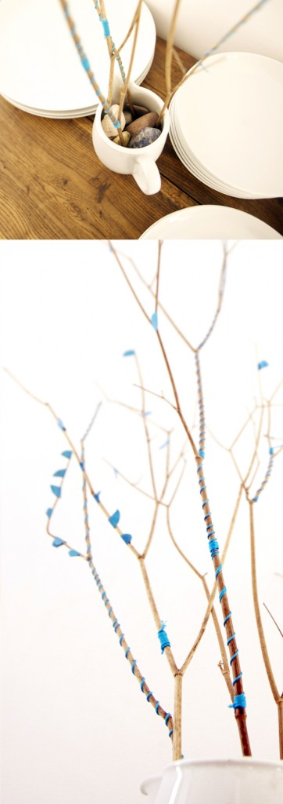

Hemos decorado unas ramas secas con papel e hilo azul. Ya que no teníamos un florero alto hemos usado un florero pequeño. Si lo llenamos de piedras aguantan las ramas que hay entre ellas. We decorated some dry branches with blue paper and blue thread. Since we had no tall vase we used a small one. Filled with stones and the branches between them. Wir haben ein paar trockene Äaste mit blauem Papier und blauem Faden dekoriert. Da wir keine hohe Vase haben, haben wir eine kleine Vase mit Steinen gefüllt und die Äste zwischen diese gesteckt.
